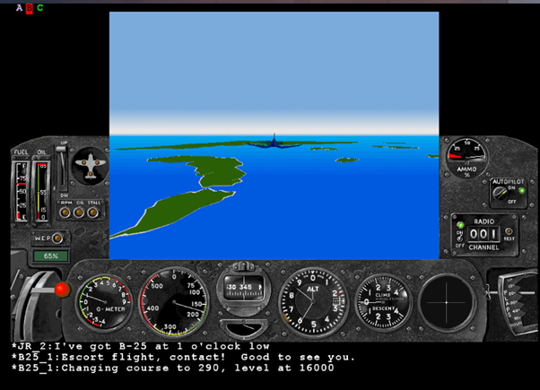
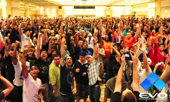

Les années 90 marquent un renouveau : plus d'innovations, plus de genres et une période très favorable pour les joueurs.
De nouveaux genres de jeux ont été créés durant cette période : les FPS (First Person Shooter), les RTS (Real Time Strategy), et les MMO (Massively Multiplayer Online). La création d'Internet et son accès par le grand public, ainsi que la démocratisation des ordinateurs, ont permis l'essor de ces nouveaux genres.
Du côté des consoles et des bornes d'arcade, celles-ci ont pu se servir de l'innovation de la 3D pour pousser le réalisme et donc l'immersion de l'expérience des joueurs à de nouveaux niveaux.

Visuel d'Air Warriors, un des premiers MMORPG - L'avènement des jeux en ligne massivement multijoueurs
Malheureusement, à cette période, les salles d'arcades devenaient de moins en moins populaires. Les consoles et les ordinateurs devenant plus abordables, ceux-ci priment sur les salles d'arcade, marquant la fin d'une ère pour le jeu vidéo public.
À cette époque, un mouvement appelé "Satanic Panic" envahit l'esprit des parents américains, puis se propagea partout dans le monde. Les jeux vidéo, devenant plus connus mais aussi plus violents, inquiétaient les adultes qui pensaient que ceux-ci pouvaient rendre leurs enfants violents ou moins "normaux", notamment parce qu'ils passaient plus de temps devant des écrans qu'à jouer dehors.
Visuels de l'époque, montrant un peu les peurs qu'avaient certaines personnes face aux jeux vidéo
Bien que les jeux de combats aient fait leur apparition avant cette période, deux séries de jeux de combat ont véritablement créé la scène compétitive durant les années 90 : Street Fighter par Capcom, et Super Smash Bros par Nintendo.
Street Fighter forma la FGC (Fighting Game Community), qui organise des évènements autour de Street Fighter, Mortal Kombat et Tekken - trois séries de jeux très similaires et très connues, dans une scène compétitive relativement peu suivie mais chérie par ses fans.
Super Smash Bros contribua fortement à la scène e-sport, beaucoup plus suivie. Le jeu de la série le plus joué étant Melee, sorti en 2001 (bien que légèrement après la période strictement des années 90).

Un des grands tournois de jeux de combats, l'EVO - Symbole de la scène compétitive naissante
La division entre ces deux communautés peut s'expliquer par le fait que les jeux de la FGC sont très exigeants, et sa communauté, bien que généralement plus grande, ménage moins ses moyens pour être courtoise, ce qui rend les sponsors beaucoup moins friands à s'associer à cette scène comparée à d'autres disciplines e-sport.
L'avènement de la 3D et d'Internet transforme radicalement l'expérience de jeu et ouvre la voie aux jeux en ligne.
Le jeu vidéo passe définitivement des salles d'arcade aux salons familiaux et aux ordinateurs personnels.
Les années 90 voient émerger les premières scènes compétitives organisées autour des jeux vidéo.